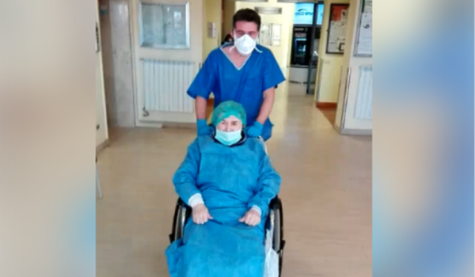

Mulher de 86 anos vence o COVID-19

Apesar de fazerem parte da população com maior risco de apresentar manifestações graves do coronavírus, alguns idosos mostraram ter um organismo forte e se recuperaram da Covid-19 mesmo com idade avançada. Um dos exemplos veio da Itália. Identificada apenas como Gianna, uma paciente de 86 anos ficou internada sete semanas para se tratar da Covid-19. Ao final do tratamento, ela conseguiu se recuperar e a notícia foi comemorada até pela prefeitura da cidade onde ela mora, na região da Lombardia, uma das mais afetadas no país europeu.